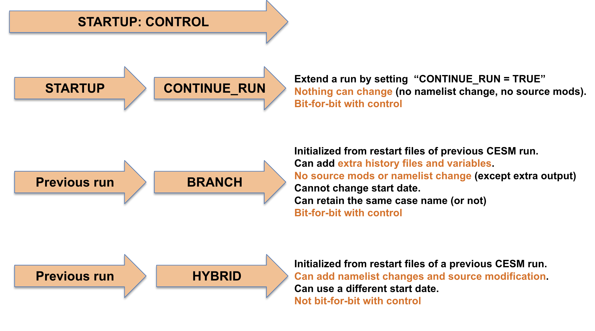

Overview#
There are three ways in which you can start a simulation with CESM. Which way you use is determined
by the xml variable RUN_TYPE in env run.xml. The three options are startup,branch and hybrid.
These have the following characteristics:
startup: all components are initialized using pre-defined baseline states that have been provided with CESM. So far we have only used this type of initialization
branch: all components are initialized using the complete set of restart files from a previous run. You specify the name of the previous run you want to start from and the date you want to start from with the xml variables
RUN_REFCASEandRUN_REFDATEand you can also specify the directory that contains the restarts withRUN_REFDIR. The run continues on from the date that you restart from, so you can’t change the start date with a branch run. The advantage of a branch run over the hybrid run is that it reproduces exactly (bit-for-bit) the solution that would be obtained if the original simulation that is used for the initialization were simply continued (provided no other changes have been made to the model).hybrid: the simulation is initialized in a manner similar to a startup run, but instead of using the default initialization datasets, the initialization datasets are specified by the user, for example, they may be obtained from a previously performed simulation. As in a branch run, you specify the name of the previous run you want to start from and the date you want to start from with the xml variables
RUN_REFCASEandRUN_REFDATEand you can also specify the directory that contains the restarts withRUN_REFDIR. Unlike for a branch run, the start date can be modified by the user and this method of initialization does not result in bit-for-bit similarity with the run that it is initialized from.
If you would like to change the output variables part way through a simulation, this can be done using a hybrid or a branch run.
Examples
For instance, the command to change RUN_TYPE to hybrid is:
./xmlchange RUN_TYPE=hybrid
If you do this, you also need to change the reference case and the reference date. For instance if the reference is case01 and the reference year is 0100-01-01 is can be done with:
./xmlchange RUN_REFCASE=case01
./xmlchange RUN_REFDATE=0100-01-01
Characteristics of different RUNTYPE#
The characteristics of the different runtypes (startup, branch or hybrid) are illustrated in Figure 1.

Figure 1: RUNTYPE Characteristics.
Depending on the runtype, you need to set other xml variables.
As explained above, the variable RUN_TYPE determines the initialization type.
This setting is only important for the initial run of a production run when the CONTINUE_RUN variable is set to FALSE. After the initial run, the CONTINUE_RUN variable is set to TRUE, and the model restarts from the restarts and ignore the variable RUN_TYPE.
The variable RUN_STARTDATE is the start date (in yyyy-mm-dd format) for either a startup or hybrid run. In a branch run, this variable is ignored.
If the run is targeted to be a hybrid or branch run, you must also specify values for RUN_REFCASE and RUN_REFDATE and if the restarts are located in a directory other than your run directory, you should also specify RUN_REFDIR to point to that location and set GET_REFCASE=TRUE to ensure the model obtains the restarts from that directory.